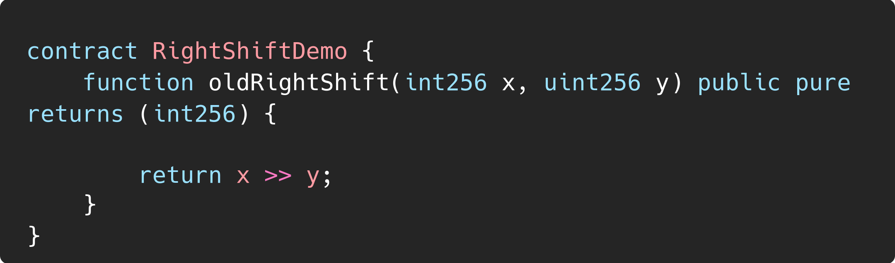

Edge Cases in Solidity Arithmetic |
|
| Organization | DeepStack Software Pvt. Ltd. |
|---|---|
| Org URL | https://www.deepstacksoft.com |
Posted on: 2024-09-18
Even though you can disable certain checks (like overflow/underflow) in Solidity using the unchecked block, the division by zero and modulo by zero checks are always enforced by the Solidity compiler to prevent runtime errors. If such a division or modulo operation is encountered, the transaction will revert regardless of the use of unchecked.
When using the right shift operator (>>) with negative numbers, the result was equivalent to the mathematical expression x / 2^y, rounded towards zero (also known as rounding up for negative numbers). This means the result would ignore the fractional part and move closer to zero.
Below example code would give output as -2 for solidity < 0.5.0 and -3 for solidity > 0.5.0

The behavior was changed to conform with common expectations in programming languages, where right shifts for negative numbers use rounding towards negative infinity (or rounding down). This means that after the shift, the result is always rounded down to the next lowest integer.
The key point is that division on integer literals in Solidity still produces a truncated result, but starting with version 0.4.0, the division result is internally treated as a rational number if it’s used in further computations.
Below example code would give output as 20 for solidity < 0.4.0 and 25 for solidity > 0.4.0